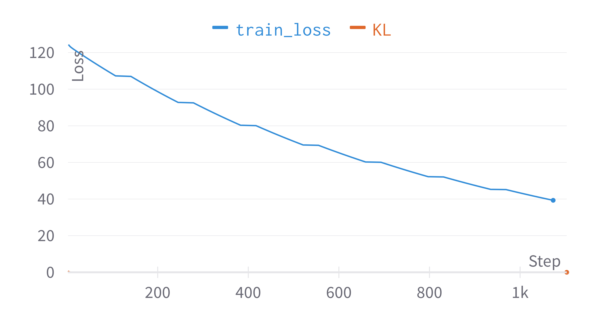
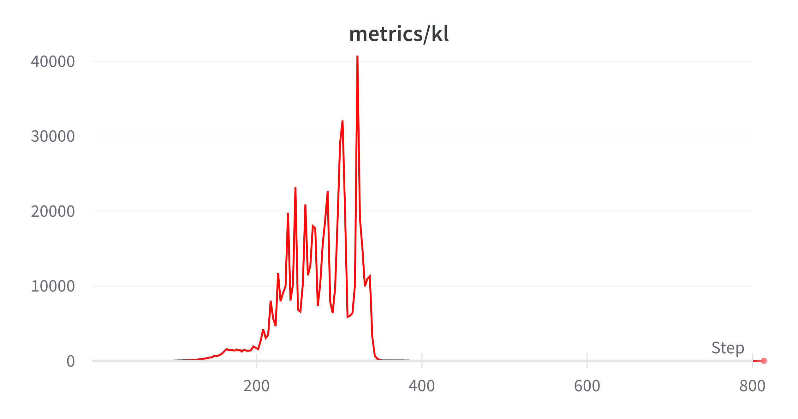
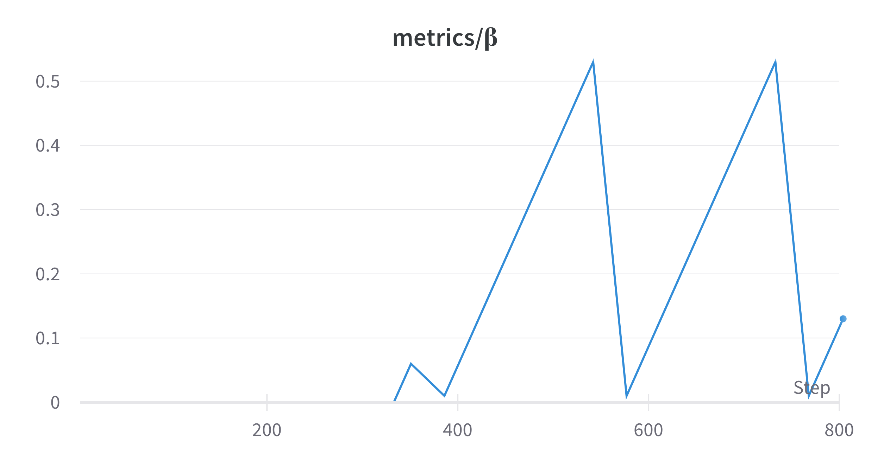

Adapting the autoencoder to use variational inference
dimension reduction
variational auto-encoder
swarm
Author
Max Worgan
Published
November 18, 2022
Motivation
Currently the autoencoder manages to reduce the 54000 datapoints (300 agents, in 3D space, over 60 timesteps = \(300 \times 3 \times 60 = 54000\)) down to 100 dimensions which a surprising amount of accuracy. But there are several drawbacks to the current approach.
Firstly, 100 values is still too many to use in composition, and secondly it’s very hard to come up with an intuative understanding of what the encoded variables represent.
For the first iteration of the ‘flock’ installation this work is part of, I used Principal Component Analysis to further reduce the 100 variables down to 10. While this does reduce the dimesionality to something managable, it only further obscures the understanding of the encoding that the AE has found.
An variant of the autoencoder called the variational autoencoder (VAE) could help to establish a better understanding of the encoding.
A VAE would allow me to generate new swarms by altering the encoding and pushing it through the decoder, allowing me to get a better understanding of what the individual items in the encoding represent.
Varational Autoencoders
Variational autoencoders were introduced by Kingma and Welling (2014), and reframe the autoencoding process as a problem of Baysean optimisation.
VAEs are similar to AEs in that they composed of an encoder and a decoder, and they are trained to minimise the reconstruction error between the original data, and the data after it has been encoded and decoded.
One of the key ways in which they differ, is that VAEs aim to create a regularised latent space which AEs lack. A regularised latent space means that points in the latent space should be meaninful once decoded. AEs make no attempt to regularise the latent space and so consequently parts of the latent space will be ‘unused’ and therefore meaningless once decoded. Given this regularisation, it means that VAEs are useful as generative processses, as sampling from the latent space will result in new data.
VAEs acheive this through a combination of factors. Conceptually, the main difference is that the problem is re-formulated through a Baysian lens, utilising variational inference.
Variational Inference
Given some data \(x\) and a latent representation \(z\), we can see how their joint probabilities are related with Bayes theorem:
\[p(z|x) = \frac{p(x|z)p(z)}{p(x)}\]
Since the denominator \(p(x)\), otherwise known as the evidence, is an intractable calculation (given non-trival dimentionality), we use variational inference to find an approxmation for \(p\), denoted by \(q\). From some family of distributions (in this case Gassians), denoted by \(Q\) we are going to pick some candiate \(q \in Q\) which best matches \(p\) given some set of parameters \(\theta\). Since we are dealing with Gaussian distributions, those parameters will be the mean and the standard deviation.
The way in which we measure similarity between distributions is via the Kullback-Leibler (KL) divergence:
We have maanged to get the intractable terms on the same side. Now, we can maximise the right hand side (which is tractable) and this will have the consequence of maximising the \(p(x)\) term (the evidence) and minimising the DL divergence between \(q(z)\) and \(p(z|x)\). Since the KL is non-negative, the left term is a lower-bound over \(\log p(x|z)\), otherwise known is the Evidence Lower BOund (ELBO)
So we have ended up with a mechanism that will allow us to minimise the KL divergence while avoiding the intractable terms found in the standard formulation.
Practical changes
Given the reformulation of the problem above, a number of practical changes need to take place.
Changes to the model
Rather than a single encoded layer, our encoder and decoder operate probabalistically, and will assume gaussian distributions. This means we will model the latent space as both the mean (\(\mu\)) and the variance (\(\sigma\)) in order to parameterise our distribution.
To deal with the unwieldy size of the encoded space (and my avaliable GPU memory) I also reduced the number of agents to 100 and the size of the encoded space to 10. This additionally meant the extra PCA step used previously was no longer necessary.
functioncreate_vae() encoder_features =Chain(# 60x300xbConv((9,), 300=>3000, relu; pad =SamePad()),MaxPool((2,)),# 30x3000xbConv((5,), 3000=>1500, relu; pad =SamePad()),MaxPool((2,)),# 15x1500xbConv((5,),1500=>750, relu; pad =SamePad()),# 15x750xbMaxPool((3,)),Conv((3,),750=>250, relu; pad =SamePad()),Conv((3,),250=>25, relu; pad =SamePad()),Conv((3,),25=>10, relu; pad =SamePad()),# 5x10xb Flux.flatten,Dense(50,10,relu) ) encoder_μ =Chain(encoder_features, Dense(10,10)) encoder_logσ =Chain(encoder_features, Dense(10,10)) decoder =Chain(Dense(10,50,relu), (x ->reshape(x, 5,10,:)),# 5x10xbConvTranspose((3,), 10=>25, relu; pad =SamePad()),ConvTranspose((3,), 25=>250, relu; pad =SamePad()),ConvTranspose((3,), 250=>750, relu; pad =SamePad()),Upsample((3,)),# 15x7500xbConvTranspose((5,), 750=>1500, relu; pad =SamePad()),Upsample((2,)),# 30x1500xbConvTranspose((5,), 1500=>3000,relu; pad =SamePad()),Upsample((2,)),# 60x3000xbConvTranspose((9,), 3000=>300; pad =SamePad()),# 60x300xb )return (encoder_μ, encoder_logσ, decoder)end
create_vae (generic function with 1 method)
The loss function
Below is the reworked loss function. Of note is the fact that we have to sample from the latent space with our \(\mu\) and \(log\sigma\). Also it should be noted that the \(p(x|z)\) in our definition of the ELBO is in practical terms the reconstruction loss, i.e. the standard autoencoder loss between the input and the reconstructed input.
functionvae_loss(encoder_μ, encoder_logσ, decoder, x)# Forward propagate through mean encoder and std encoders μ =encoder_μ(x) logσ =encoder_logσ(x)# Sample from the latent space z = μ +gpu(randn(Float32, size(logσ))) .*exp.(logσ)# Reconstruct from latent sample x̂ =decoder(z)# this derivation of the KL when dealing with Gassians# can be found in the original paper Appendix B kl =-0.5*sum(@. 1+ logσ - μ^2-exp(logσ))# calc the reconstruction loss rec =reconstruction_loss(x̂, x)return rec + klend
vae_loss (generic function with 1 method)
Challenges in training
With the changes outlined above, we should have all we need to learn encoding of our flocking data. However, we quickly encountered problems with training, observing the so-called ‘KL vanishing’ problem, whereby the KL divergence term becomes vanishingly small.

Figure 1: Vanishing KL
See Figure 1 for an early attempt at training whereby the loss is decreasing, but the KL term vanishes to effectvely zero.
At the recommendation of a collegue (thanks Kieran), I started looking at \(\beta\)-vae, as first described by Higgins et al. (2017)
Essentially \(\beta\)-vae adds a scaling parameter to the KL term:
Building upon this work, Fu et al. (2019) proposed a ‘Cyclical Annealing’ method in which the \(\beta\) variable starts at 0, effectively negating the KL regularisation term, and is then slowly increased, before the process starts again and repeats.
An initial attempt at this processes showed some promise:

KL Divergence

\(\beta\)
Figure 2: Cyclical Annealing
However, as can been seen in Figure 2, the KL did seem to be growing, but as soon as the \(\beta\) began increasing the KL crashed back down to effectively nothing. Subsequent cycles of the \(\beta\) parameter had no further effect.
It seemed that acceptable values of \(\beta\) would have to be empirically uncovered, which may well be a long process. Thankfully, I discovered the work by Rybkin, Daniilidis, and Levine (2021) which eliminates the need for fine tuning the \(\beta\) parameter. Their work, known as \(\sigma\)-vae uses a single shared variance which is estimated analytically with their algorithm ‘Optimal \(\sigma\)-vae’:
where \(MSE(x,\mu) = \frac{1}{D}\sum(x_i - \mu_i)^2\)
This can be implemented very simply as illustrated by the authors1
They authors use the gaussian negative-log likelihood loss function which seemed appropriate to my usecase along with a ‘softclip’ operation for restricting the range of the variance as proposed by Chua et al. (2018). All these changes combined resulted in the following:
The above charts have been smoothed to show the general trend. As can be seen the training loss is moving the correct direction, and the KL no longer vanishes to 0!
References
Chua, Kurtland, Roberto Calandra, Rowan McAllister, and Sergey Levine. 2018. “Deep Reinforcement Learning in a Handful of Trials Using Probabilistic Dynamics Models.”Advances in Neural Information Processing Systems 31. https://arxiv.org/abs/1805.12114.
Fu, Hao, Chunyuan Li, Xiaodong Liu, Jianfeng Gao, Asli Celikyilmaz, and Lawrence Carin. 2019. “Cyclical Annealing Schedule: A Simple Approach to Mitigating KL Vanishing.”arXiv. http://arxiv.org/abs/1903.10145.
Higgins, Irina, Loic Matthey, Arka Pal, Christopher Burgess, Xavier Glorot, Matthew Botvinick, Shakir Mohamed, and Alexander Lerchner. 2017. “Beta-Vae: Learning Basic Visual Concepts with a Constrained Variational Framework.” In. https://openreview.net/forum?id=Sy2fzU9gl.
Rybkin, Oleh, Kostas Daniilidis, and Sergey Levine. 2021. “Simple and Effective VAE Training with Calibrated Decoders.”arXiv. http://arxiv.org/abs/2006.13202.